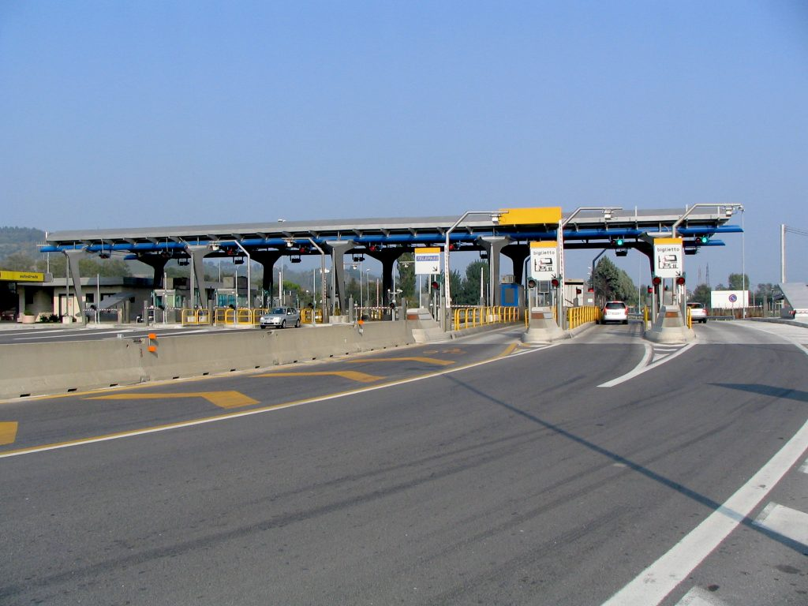
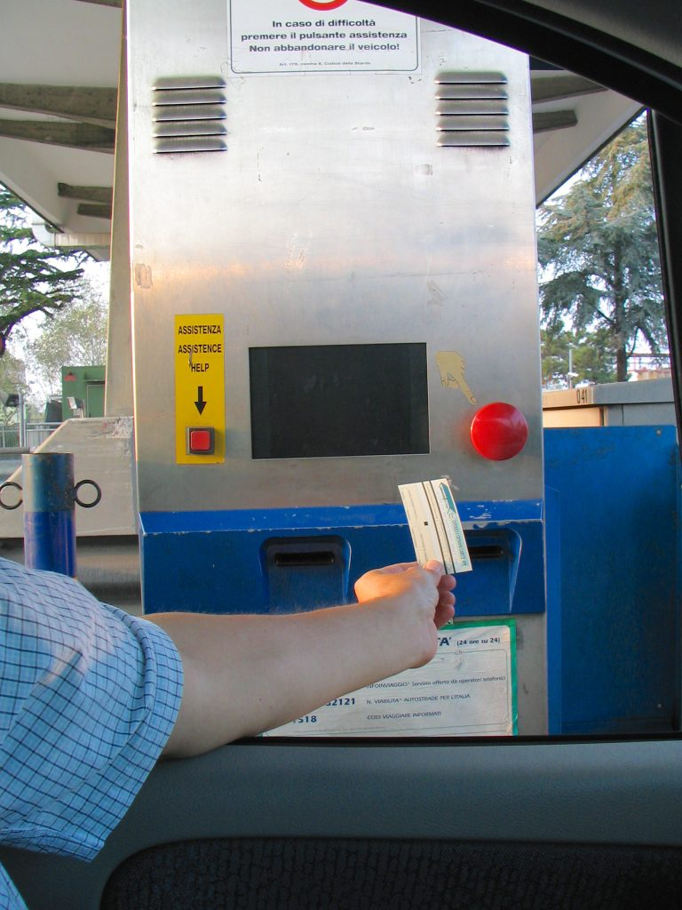

Highway toll booths (Photo by Francesca Tosolini)
Pick the one that says biglietto or ticket and get a ticket from the machine (be careful not to enter the gates that say Telepass or Viacard only, which are reserved for drivers that have purchased those passes, usually people that frequent the highways on a daily basis). The ticket tells you where you entered the highway, so don’t toss it: you’ll need it when it’s time to pay the toll at the highway exit.
Highway ticket machine: press the red button to get the ticket (Photo by Francesca Tosolini)
*** DID YOU KNOW? Keep your highway ticket as a treasure, because, by law, the penalty for losing your ticket is a toll calculated on the farthest entry tollbooth. *** {This is an excerpt from chapter 2 “Driving in Italy” of the eBook “Italy from the Inside. A native Italian reveals the secrets of traveling in Italy”}